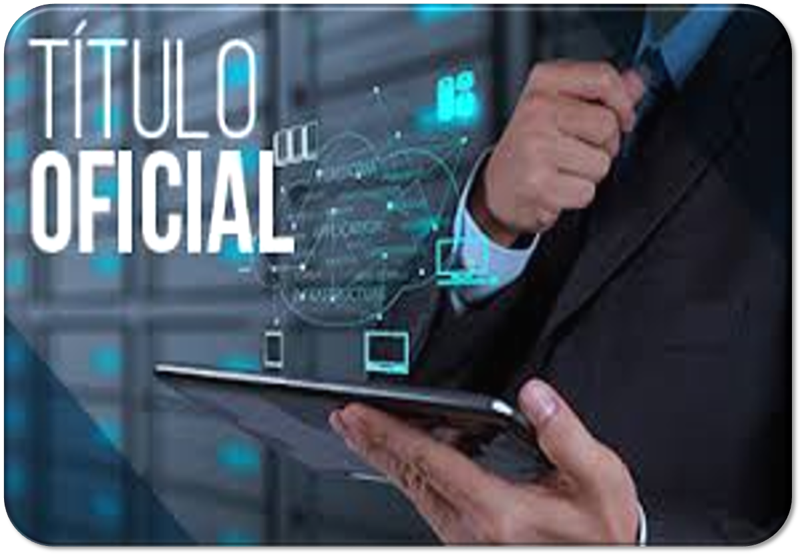
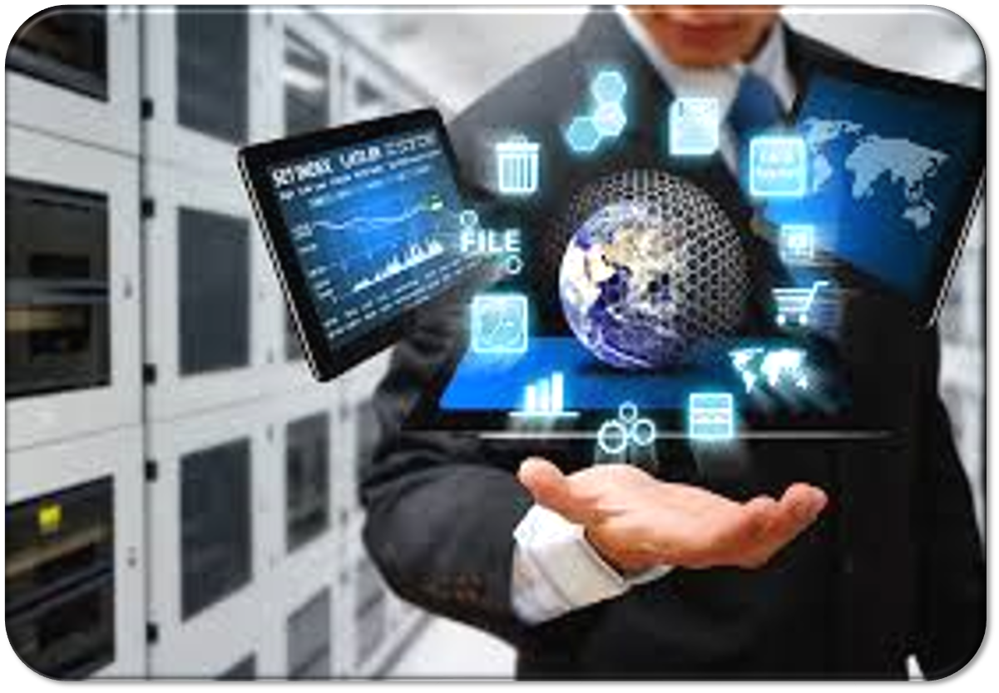
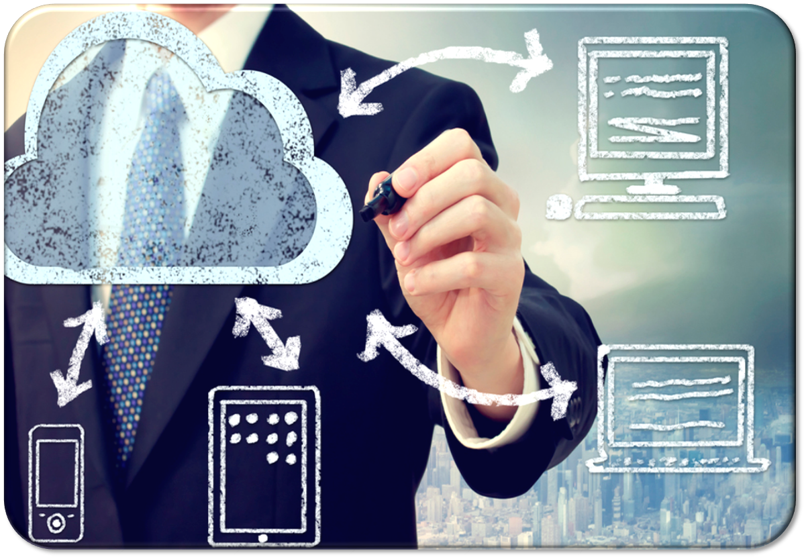

La tecnología de la información es un proceso que utiliza una combinación de medios y métodos de recopilación, procesamiento y transmisión de datos para obtener nueva información de calidad sobre el estado de un objeto, proceso o fenómeno. El propósito de la tecnología de la información es la producción de información para su análisis por las personas y la toma de decisiones sobre la base de la misma para realizar una acción.
LAS TECNOLOGÍAS DE LA INFORMACIÓN (TI)
La introducción de una computadora personal en el ámbito de la información y la aplicación de los medios de comunicación de telecomunicaciones han determinado una nueva etapa en el desarrollo de la tecnología de la información. La TI moderna es una tecnología de la información con una interfaz de usuario "amigable" que utiliza computadoras personales e instalaciones de telecomunicaciones. La nueva tecnología de la información se basa en los siguientes principios básicos.



La introducción de una computadora personal en el ámbito de la información y la aplicación de los medios de comunicación de telecomunicaciones han determinado una nueva etapa en el desarrollo de la tecnología de la información. La TI moderna es una tecnología de la información con una interfaz de usuario "amigable" que utiliza computadoras personales e instalaciones de telecomunicaciones. La nueva tecnología de la información se basa en los siguientes principios básicos.
Modo interactivo (diálogo) de trabajar con una computadora.
Integración con otros productos de software.
Flexibilidad en el proceso de cambio de datos y definiciones de tareas.
Como un conjunto de herramientas de tecnología de la información, se utilizan muchos tipos de programas informáticos: procesadores de texto, sistemas de publicación, hojas de cálculo, sistemas de gestión de bases de datos, calendarios electrónicos, sistemas de información de propósito funcional.
CARACTERÍSTICAS DE LAS TECNOLOGÍAS DE LA INFORMACIÓN:
Operación del usuario en el modo de manipulación de datos (sin programación). El usuario no debe saber y recordar, sino que debe ver (dispositivos de salida) y actuar (dispositivos de entrada).
Soporte de información transversal en todas las etapas de la transmisión de información sobre el apoyo de una base de datos integrada, que proporciona una forma única de introducir, buscar, mostrar, actualizar y proteger la información.
Procesamiento de documentos sin papel durante el cual sólo se registra la versión final del documento en papel, las versiones intermedias y los datos necesarios registrados en los medios se entregan al usuario a través de la pantalla de visualización del PC.
Modo de solución de tareas interactivo (de diálogo) con una amplia gama de posibilidades para el usuario.
Producción colectiva de un documento sobre la base de un grupo de ordenadores unidos por medios de comunicación.
Procesamiento adaptativo de la forma y los modos de presentación de la información en el proceso de resolución de problemas.
TIPOS DE TECNOLOGÍAS DE LA INFORMACIÓN:
Los principales tipos de tecnología de la información incluyen los siguientes:
La tecnología de la información para el procesamiento de datos está diseñada para resolver problemas bien estructurados, cuyos algoritmos de solución son bien conocidos y para los cuales existen todos los datos de entrada necesarios. Esta tecnología se aplica al nivel de rendimiento del personal de baja calificación con el fin de automatizar algunas operaciones rutinarias y constantemente repetidas del trabajo administrativo.
La tecnología de información de gestión está destinada al servicio de información de todos los empleados de las empresas, relacionado con la aceptación de las decisiones administrativas. En este caso, la información suele presentarse en forma de informes de gestión ordinarios o especiales y contiene información sobre el pasado, el presente y el posible futuro de la empresa.
La tecnología de la información de la oficina automatizada está diseñada para complementar el sistema de comunicación existente del personal de la empresa. La automatización de la oficina asume la organización y el apoyo de los procesos de comunicación tanto dentro de la empresa, como con el entorno externo sobre la base de redes informáticas y otros medios modernos de transferencia y trabajo con la información.
La tecnología de la información para el soporte de decisiones está diseñada para desarrollar una decisión de gestión que se produce como resultado de un proceso iterativo en el que participan un sistema de soporte de decisiones (un enlace informático y el objeto de la gestión) y una persona (el enlace de gestión, que establece datos de entrada y evalúa el resultado).
La tecnología de la información de los sistemas expertos se basa en el uso de inteligencia artificial. Los sistemas expertos permiten a los gerentes recibir asesoramiento experto sobre cualquier problema sobre el cual se haya acumulado conocimiento en estos sistemas.